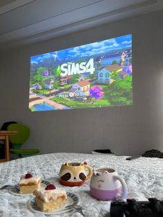

A Realidade Virtual (RV) é um ambiente — gerado por
meio de um computador — com cenas e objetos que parecem
reais, fazendo com que os usuários se sintam
imersos nessa realidade.
Realidade Virtual
O termo realidade virtual foi utilizado pela primeira vez
no livro “Le Théâtre et son double”, do autor francês, Antonin
Artaud, em 1938. Antonin criou o termo ao sugerir um teatro
onde “a ilusão natural de personagens e objetos criavam uma
realidade virtual”.
Em 1939, foi apresentado ao mundo na feira internacional de
ciências de Nova York o “View-Master”.
Ao induzir efeitos visuais, sonoros e até táteis, a realidade
virtual permite a imersão completa em um ambiente simulado,
com ou sem interação do usuário.
Com o uso da estereoscopia, a ilusão de profundidade é criada,
apresentando mais um elemento de imersão para a realidade
virtual. Para que isso aconteça, duas imagens diferentes são
geradas, uma para cada olho. O efeito consiste na interpretação
do cérebro de que as duas imagens na realidade são uma só.
Realidade Aumentada
A realidade aumentada (RA) é uma tecnologia que integra
elementos virtuais ao mundo real por meio de câmeras.
Ela permite sobrepor informações virtuais à nossa visão
da realidade, criando uma experiência interativa.
Realidade Aumentada
A RA combina conteúdo gerado por computador com o ambiente
físico, podendo envolver diferentes modalidades sensoriais,
como visual, auditiva e tátil.
A realidade aumentada tem diversas aplicações, tanto no
entretenimento quanto em áreas como educação, medicina,
arquitetura, indústria e comércio.
Alguns exemplos de aplicativos de realidade aumentada incluem
jogos, aplicativos de navegação, aplicativos de decoração de
interiores, simuladores de treinamento e muito mais.
A tecnologia de realidade aumentada utiliza algoritmos avançados
para rastrear e reconhecer objetos e superfícies do mundo real,
permitindo a sobreposição de elementos virtuais de forma precisa.
Ela pode ser experimentada por meio de dispositivos como smartphones,
tablets, óculos de realidade aumentada e até mesmo projetores.
Ciência de Dados
A Ciência de Dados envolve a coleta, armazenamento, processamento
e análise de dados, utilizando técnicas avançadas de
modelagem estatística, aprendizado de máquina e
inteligência artificial.
Ciência de Dados
A ciência de dados é um campo de estudo multidisciplinar que utiliza
estatísticas, computação científica, métodos científicos,
algoritmos e sistemas para extrair conhecimento e insights de
dados estruturados e não estruturados.
É uma abordagem que combina princípios e técnicas de várias áreas,
como matemática, estatística, ciência da computação e domínio do
assunto.
A ciência de dados tem como objetivo principal analisar grandes
volumes de dados para identificar padrões, tendências e informações
relevantes que possam ser utilizadas para tomar decisões
estratégicas e obter vantagem competitiva.
Essa área de estudo é amplamente aplicada em diversos setores,
como finanças, saúde, marketing, varejo, entre outros. Os
profissionais de ciência de dados são responsáveis por extrair
insights valiosos dos dados, desenvolver modelos preditivos e
tomar decisões baseadas em evidências.
IOT
A Internet das Coisas (IOT) é uma revolução tecnológica que tem
como objetivo conectar itens do cotidiano à Internet,
tornando-os inteligentes e capazes de interagir com o ambiente
e com as pessoas.
Internet das Coisas
A Internet das Coisas (IoT) descreve dispositivos com sensores,
capacidade de processamento, software e outras tecnologias que
se conectam e trocam dados com outros dispositivos e sistemas
por meio da Internet ou de outras redes de comunicação.
A IoT conecta objetos e dispositivos digitalmente, permitindo a
coleta, análise e execução de tarefas com base nas informações
coletadas.
A IoT é amplamente aplicada em diversos setores, como saúde,
indústria, transporte, agricultura, cidades inteligentes, entre
outros.
Ela oferece benefícios como automação, eficiência energética,
monitoramento remoto, otimização de processos e melhorias na
qualidade de vida.
IA
A inteligência artificial (IA) é a inteligência de máquinas
ou software, em oposição à inteligência humana ou animal. É
um campo de estudo da ciência da computação que desenvolve e
estuda máquinas inteligentes.
Inteligência Artificial
A IA pode processar informações mais rapidamente do que os seres
humanos, encontrando padrões e descobrindo relações entre dados que
os humanos não conseguem.
A IA contribui para a automação de atividades lógicas, analíticas e
cognitivas, o que resulta em maior velocidade no tratamento de
informações.
A IA utiliza técnicas avançadas, como aprendizado de máquina e redes
neurais, para aprender com os dados e melhorar seu desempenho ao
longo do tempo.
A IA está presente em diversos setores, como saúde, finanças,
indústria, transporte, entre outros. Ela oferece benefícios como
automação de tarefas, otimização de processos, tomada de decisões
baseadas em dados e melhorias na eficiência.
O afeto das poluições no cotidiano de moradores das cidades brasileiras
Linguagens
Rococó e Neoclassicismo
Matemática
Pesquisa de Campo sobre educação sexual
Projeto do Ano Letivo
Streetcast Podcast
Técnico em Informática
Plataforma Netflix em SQL e JavaScript
Técnico em Informática
Projeto de Redes de Computadores
Linguagens
Livro: Uma Passagem Para a Liberdade
Meus Hobbies
Leitura
A leitura me trás paz. Leio desde pequena todos os gêneros
possíveis mas meu coração pertence à Trilogia Jogos Vorazes.
Assistir sitcoms e filmes de romance
Menção honrosa à Como Eu Era Antes de Você, Para todos os Garotos
que Já Amei, Orgulho e Preconceito, Simplesmente Acontece, 10 Coisas
que Odeio em Você, Friends e Gilmore Girls.

Jogar The Sims
Seja no PC ou no celular, é meu passatempo de conforto. Amo Jogar
e assistr gameplays desde sempre.
Praia e piscina
Apaixonada pelo sol, areia, água e principalmente nadar. Resumo
de férias dos sonhos.
Água de coco e suco de maracujá
Minhas bebidas preferidas do universo. Ps. Brownie, feijoada e
costela como hobbies do estômago.